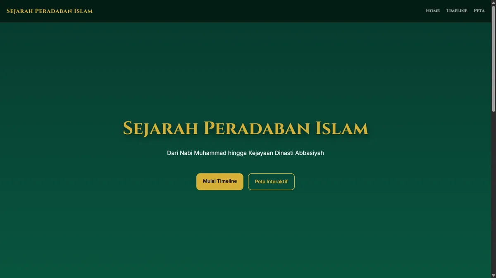
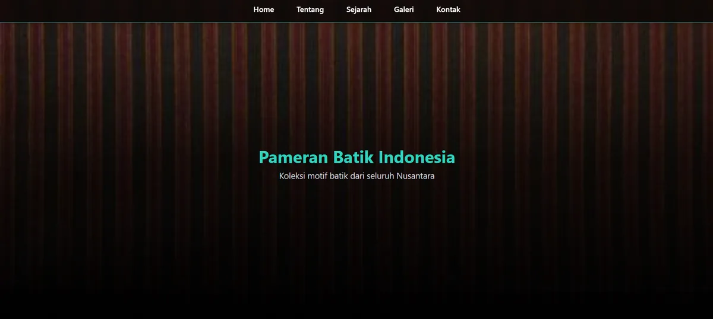
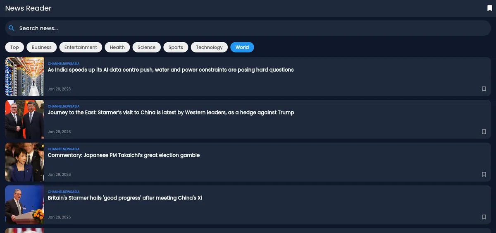
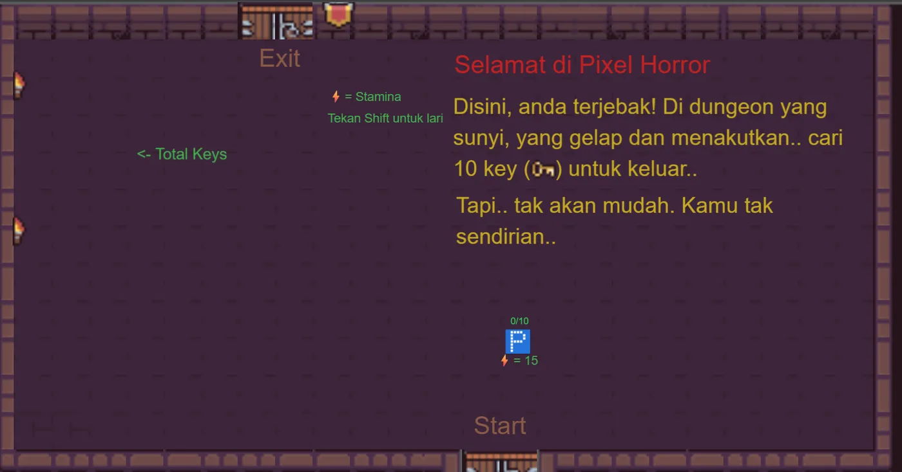
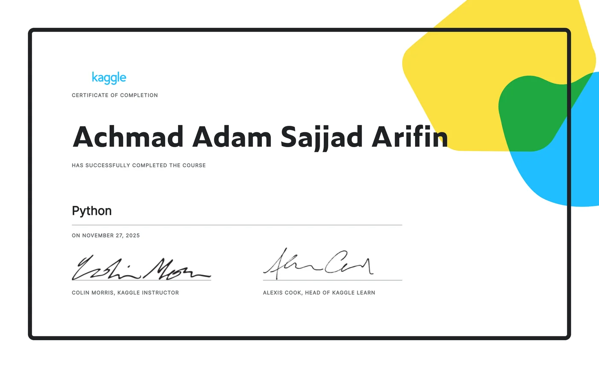
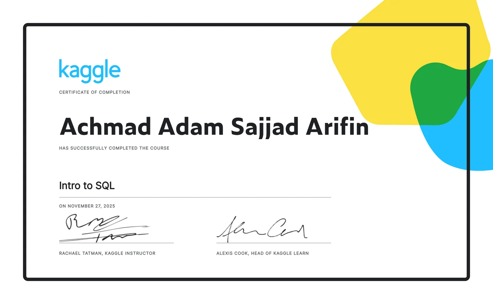

Web (fokus utama)
HTMLCSSJavaScriptTailwind CSSBootstrapResponsive Layout
Siswa RPL · SMKN 5 Malang
Saya seorang Web Developer
Membangun website yang rapi, cepat, dan enak dipakai — dari galeri budaya, situs edukasi, sampai aplikasi pembaca berita.
Saya siswa RPL di SMKN 5 Malang dengan fokus di Web Development. Saya senang mengerjakan bagian yang langsung dilihat dan disentuh orang: struktur halaman yang masuk akal, tampilan yang rapi di HP maupun desktop, dan kode yang masih enak dibaca seminggu kemudian.
Sejauh ini saya sudah membangun galeri budaya, website edukasi, dan aplikasi pembaca berita. Saya juga pernah membuat game 2D — pengalaman itu yang melatih cara saya berpikir soal logika dan alur pengguna.
Di luar kode, saya magang di divisi media dan terbiasa mengerjakan poster, thumbnail, dan video. Kebiasaan itu terbawa ke web: saya peduli pada tampilan, bukan cuma fungsinya.
Target saya: jadi web developer yang bisa dipercaya mengerjakan satu website dari nol sampai online.
Yang saya pakai sehari-hari untuk membangun website, plus kemampuan pendukung dari magang.
Website dan aplikasi yang sudah saya buat. Klik untuk melihat hasilnya langsung.

Website edukatif yang merangkum sejarah peradaban Islam, dari Nabi Muhammad hingga Dinasti Abbasiyah, dengan tampilan interaktif.

WebsiteWebsite pameran batik Indonesia: satu halaman utama sebagai galeri, dan halaman detail untuk tiap motif (Mega Mendung, Parang, Sidomukti, Lurik).

AplikasiAplikasi pembaca berita yang mengambil data secara real-time, dibuat untuk memudahkan akses informasi.

Game 2DGame horror 2D berbasis Construct: jelajahi dungeon gelap, kumpulkan 10 kunci, dan temukan jalan keluar. Proyek lama, tapi di sinilah saya belajar merancang alur dan aturan main.
Saya menjalani PKL di LAZIS Sabilillah Malang pada divisi Media — satu naungan dengan Radio Desimal 89,5 FM. Tugas saya membuat poster, thumbnail video untuk Instagram dan YouTube, dokumentasi kegiatan, serta produksi video. Hasil kerjanya tayang di kanal resmi LAZIS Sabilillah dan Radio Desimal.
Klik sertifikat untuk memverifikasinya langsung di Kaggle.


Punya proyek website, kesempatan magang, atau sekadar ingin berdiskusi? Kirim pesan lewat form atau hubungi langsung lewat kanal berikut.